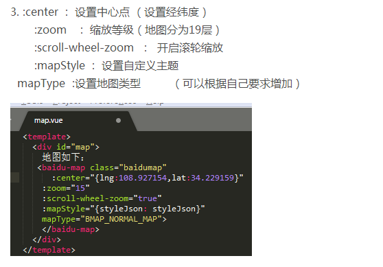

http://lbsyun.baidu.com/
//如果第一次用要在这里申请应用key
npm install vue-baidu-map --save
//引入百度地图
import BaiduMap from 'vue-baidu-map'
//百度地图key
Vue.use(BaiduMap,{ak:'nL24lQlAsPgYYIqgSrDxedhv5209BQIy'});
//nL24lQlAsPgYYIqgSrDxedhv5209BQIy 是自己在百度地图上生成的应用key
< baidu-map class="baidumap" :center={lng:118.703451,lat:25.360938}
:zoom="15"
:scroll-wheel-zoom="true"
:mapStyle="{styleJson:styleJson}"
mapType="BMAP_NORMAL_MAP" > < /baidu-map >

.baidumap{
height:200px;
width:100%;
}